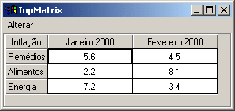

Creates a matrix of alphanumeric fields. Therefore, all values of the matrix’s fields are strings. The matrix is not a grid container like many systems have. It inherits from IupCanvas.
It has two modes of operation: normal and callback mode. In normal mode string values are stored in attributes for each cell. In callback mode these attributes are ignored and the cells are filled with strings returned by the "
VALUE_CB" callback. So the existance of this callback defines the mode the matrix will operate.
Ihandle* IupMatrix(char *action_cb); [in C] iup.matrix{} -> (elem: ihandle) [in Lua] matrix(action_cb) [in LED]action_cb: Name of the action generated when the user types something.
Returns the identifier of the created matrix, or NULL if an error occurs.
Cell Attributes
- L:C
- ALIGNMENTn
- BGCOLOR
- FGCOLOR
- FONT
- FOCUS_CELL
- VALUE
SORTSIGNSize Attributes
- NUMCOL
- NUMCOL_VISIBLE
- NUMLIN
- NUMLIN_VISIBLE
- WIDTHDEF
- WIDTHn
- HEIGHTn
- RESIZEMATRIX
Mark Attributes
- AREA
- MARK_MODE
- MARKED
- MULTIPLE
Action Attributes
- ADDCOL
- ADDLIN
- DELCOL
- DELLIN
- EDIT_MODE
- ORIGIN
- REDRAW
General Attributes
- CURSOR
- FRAMECOLOR
- SCROLLBAR
- SIZE
- CARET
- SELECTION
HIDEFOCUS
Interaction
ACTION_CB - Action generated when a keyboard event occurs.
CLICK_CB - Action generated when any mouse button is pressed over a cell.
MOUSEMOVE_CB - Action generated to notify the application that the mouse has moved over the matrix.
ENTERITEM_CB - Action generated when a matrix cell is selected, becoming the current cell.
LEAVEITEM_CB - Action generated when a cell is no longer the current cell.
SCROLLTOP_CB - Action generated when the matrix is scrolled with the scrollbars or with the keyboard.Drawing
BGCOLOR_CB - Action generated to retrieve the background color of a cell when it needs to be redrawn.
FGCOLOR_CB - Action generated to retrieve the foreground color of a cell when it needs to be redrawn.
DRAW_CB - Action generated before the cell is drawn. Allow a custom cell draw.
DROPCHECK_CB - Action generated to determine if a dropdown feedback should be shown.Editing
DROP_CB - Action generated to determine if a text field or a dropdown will be shown.
DROPSELECT_CB - Action generated when an element in the dropdown list is selected.
EDITION_CB - Action generated when the current cell enters or leaves the edition mode.Callback Mode
VALUE_CB - Action generated to verify the value of a cell.
VALUE_EDIT_CB - Action generated to notify the application that the value of a cell was edited.
MARK_CB - Action generated to verify the selection state of a cell.
MARKEDIT_CB - Action generated to notify the application that the selection state of a cell was changed.
elem:setcell(lin, col: number, value: string)Modifies the text of a cell.
elem:getcell(lin, col: number) -> (cell: string)Returns the text of a cell.
These functions can be used to help set and get attributes from the matrix:
void IupMatSetAttribute (Ihandle *n, char* a, int l, int c, char* v); void IupMatStoreAttribute(Ihandle *n, char* a, int l, int c, char* v); char* IupMatGetAttribute (Ihandle *n, char* a, int l, int c); int IupMatGetInt (Ihandle *n, char* a, int l, int c); float IupMatGetFloat (Ihandle *n, char* a, int l, int c); void IupMatSetfAttribute (Ihandle *n, char* a, int l, int c, char* f, ...);They work just like the respective tradicional set and get functions. But the attribute string is complemented with the L and C values. For ex:
IupMatSetAttribute (n, "" , 30, 10, v) = IupSetAttribute(n, "30:10", v) IupMatSetAttribute (n, "BGCOLOR" , 30, 10, v) = IupSetAttribute(n, "BGCOLOR30:10", v) IupMatSetAttribute (n, "ALIGNMENT" , 10, 0, v) = IupSetAttribute(n, "ALIGNMENT10:0", v) (*)(*) noticed that in this case the second value will be ignored.
The IupMask control can be used to create a mask and filter the text entered by the user in each cell.
Titles
A matrix might have titles for lines and columns. This must be defined before the matrix is mapped, and cannot be changed afterwards. A matrix will have line titles if, before it is mapped, an attribute of the “L:0” type is defined. It will have column titles if, before being mapped, an attribute of the “0:C” type is defined. The size of a line title is given by attribute “WIDTH0”, if it is defined. Otherwise, it is given by the size of the largest title defined when the matrix is mapped.
Titles (for lines or columns) can be generated with more that one text line. For such, the title value must contain a “\n”. The matrix does not by itself change the line’s height to fit titles with multiple lines. The user must change the line’s size manually, by using attribute HEIGHTn. In IUP’s size definition, a line with height 8 will fit one text line, a line with height 16 will fit two text lines, and so on.
When allowed the width of a column can be changed holding and dragging its title right border.
Callback Mode
Very large matrices must use the callback mode to set the values, and not the regular value attributes of the cells. The idea is the following:
1 - Register the VALUE_CB callback
2 - No longer set the value of the cells. They will be set one by one by the callback. Note that the values of the cells must now be stored by the user.
3 - If the matrix is editable, set the VALUE_EDIT_CB callback.
4 - When the matrix must be invalidated, use the REDRAW attribute to force a matrix redraw.A negative aspect is that, when VALUE_CB is defined, the matrix never verifies attributes of type “%d:%d”. Therefore, it also does not verify line and column titles (which must be given by the callback). The result is that, at the moment the matrix is created, it resorts solely to the existence of attributes WIDTH0 and HEIGHT0 to find out if it will have line or column titles. That is, for such matrices to have titles, the WIDTH0 and HEIGHT0 attributes must be defined. This problem is not serious, because with IUP’s definition of SIZE, HEIGHT0=8 will always produce a column title in the size desired.
Another important reminder: if VALUE_CB is defined and VALUE_EDIT_CB is not, it is absolutely necessary that the application does not allow the user to edit any cell. This must be done by returning IUP_IGNORE in the IUP_EDITION_CB callback. (In the future, this will be done inside the matrix.)
Navigation
Navigating through the matrix cells outside the edition mode is done by using the following keys:
- Arrows: Moves the focus to the next cell, according to the arrow’s direction.
- Page Up and Page Down: Moves a visible page up or down.
- Home: Moves the focus to the fist column in the line.
- Home Home: Moves the focus to the upper left corner of the visible page.
- Home Home Home: Moves the focus to the upper left corner of the first page of the matrix.
- End: Moves the focus to the last column in the line.
- End End: Moves the focus to the lower right corner of the visible page.
- End End End: Moves the focus to the lower right corner of the last page in the matrix.
Inside the edition mode, the following keys are used for a text field:
- Up and down arrows: Leave the edition mode and moves the focus accordingly.
- Left and right arrows: If the caret is at the extremes of the text being edited then leave the edition mode and moves the focus accordingly.
- Ctrl + Arrows: Leave the edition mode and moves the focus accordingly.
When the matrix is outside the edition mode, pressing any character key makes the current key to enter in the edition mode, the old text is replaced by the new one being typed. If Enter or Space is pressed, the current cell enters the edition mode with the current text of the cell. If Del is pressed, the whole contents of the cell will be deleted. Double-clicking a cell also enters the edition mode. In Motif, when start editing using a double click, the user must click again to the edit control get the focus.
When the matrix is in the edition mode, to confirm the entered value, press Enter. By pressing Esc, the previous value is restored. The cell will also leave the edition mode if the user clicked in another cell or in another control, then the value will be confirmed. When pressing Enter to confirm the value the focus goes to the cell bellow the current cell, if at the last line then the focus goes to the cell on the left. The value confirmation depends on the EDITION_CB callback return code.
Marks
When mark mode is active the cells can be marked using mouse, if the keyboard is used all marks are cleared.
A marked cell will have its background attenuated to indicate that it is marked.
Cells can be selected individually or the marks can be restricted to lines and/or columns. Also multiple cells can be marked simultaneously in continuous or in segmented areas. Lines and columns are marked only when the user clicks in their respective titles. Continuous areas are marked holding and dragging the mouse or holding the Shift key. Segmented areas are marked holding the Ctrl key.
Creates a simple matrix with the values and layout shown in the image below. There is also a menu that allows making some changes to the matrix.
